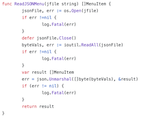

Adam Thornton
Created: 2024-04-27 Sat 09:09
Software Necromancy
Adam Thornton, April 2021
https://athornton.github.io/software-necromancy/
CC BY-NC 4.0
What is Software Necromancy?
(Grand Lodge of BC and Yukon, from Venture Brothers S1 E12)
Not to be confused with Software Necrophilia.
Aw, c'mon, who am I kidding?
Starts out simply enough…
A little nostalgia for the machines of one's youth…
(Vectronic's Apple World by way of apple-history.com)
But these things are a little inconvenient
I still have my childhood Apple //e; most people don't.
Fortunately Moore's Law makes faster-than-original speed emulation of these systems quite easy.

(Gerard Putter)
But then your desires get…more exotic
- MAME/MESS The arcade emulator, has absorbed MESS and has a surprisingly good non-arcade cabinet selection not merely of 8-bit home computers but all sorts of things. Very graphical/console oriented.
- SIMH Mostly but not entirely DEC, from PDP-1 to VAX. Excellent non-graphical choice, and much better for remote text-mode access to machines.
- Hercules IBM 360/370/390/System z emulation. Fragmented development now, quite confusing, maybe stalled, but for historical emulation v3 works just fine.
Or you can go in more recent directions
Working pretty well
Need some work
- It looks like CADR, the LISP Machine emulator has bitrotted.
- So has TME (for 68K Sun3 machines)
With a little elbow grease, either might be resurrectable.
Plenty of other things out there too; these are just the ones I've been poking at.
But isn't that hardware emulation?
Where's the software necromancy part?
Well, you need to run something on these computers, don't you?
Let's start with the operating system.
What might you run?
DEC
A bit more about VMS
You can either growl "arrr, matey" and search for PAKGEN.C, or you can ask VMS Software for a hobbyist license for Alpha, which runs perfectly well on AXPBox.
The amd64 port may be available for general-audience early adopters this year. I also made some inquiries about arm64…
IBM
Unix For Life
There are easy-to-follow how-to guides for SIMH: PDP-7 Unix ("v0"), v1-kernel-with-v2 userland, v5, v6, and v7. As well as the might-as-well-be-modern 2.11BSD (indeed, still actively developed).
I wrote a blog post exploring this a couple years ago.
The Unix Heritage Society (TUHS) is an excellent, and friendly, resource.
It's surprisingly easy to get something that boots.
…maybe a little too easy.
When one's tastes become more outré
Multiple PDP-10 emulators allow you to run not only late versions of TOPS-20 but also ITS. (TOPS-10 and TOPS-20 up to v4 run fine in SIMH.) The KA-10 and the KL-10 are quite different machines.
DPS8M enables the use of Multics.
Multics is, of course, interesting as a Unix precursor; all of these together give you what you need for a critical reevaluation of The UNIX- HATERS Handbook. Spoiler: I don't agree with ESR about much, but he's right about this.
I have taken the liberty.
What resources does all this emulation take?
You can visit https://mvsevm.fsf.net, and I am happy to create accounts for people if playing around with the guest account is too limiting.
(me)
Hardware
The first four entries are 36-bit systems (three PDP-10s and a Honeywell 6800) and run on a single Raspberry Pi 3B+ running 64-bit Ubuntu.
The Alpha is on an 11-year-old laptop (a Lenovo T410), which was a hand-me-down to me.
The last five entries–two VAXen and three PDP-11s–run on another Raspberry Pi 3B+, this one running 32-bit Raspbian.
Software, money, power, and time
You don't want to run emulators on a host with a narrower word size than the guest if you can avoid it. Hence 64-bit Ubuntu for the things emulating 36-bit wordsizes.
A Raspberry Pi is too slow for the Alpha emulator to be usable.
Total budget, maybe $100, maybe 50W, and some time (doing it from the cookbooks, sequentially, maybe a dozen hours, most of which is spent in disk wait).
But now what?
There are two directions we can explore from here.
The first is simply, how did I build https://mvsevm.fsf.net?
That's quick and easy to discuss and we will cover it today.

(me)
OK, and then what?
Second: now that we have raised the zombies from the grave, how can we put them to work? What applications do we want to run on the OSes we are now able to boot?
We don't have time for both topics in a single talk. I'll adress the first today and the second at a future date.
(Bettman archive via Getty Images)
Remember the humble terminal server?
Think back to the early 1990s, just before TCP/IP won. You'd dial in to a modem bank somewhere, and be confronted with a prompt, at which you'd type the name of the system you wanted to connect to, and be connected through some sort of serial multiplexer to it.
I wanted that, but with a web front-end. I wrote it in Go (just because I've missed working in Go) and called it "tmenu".
Design Considerations
It needed to be easy to change the target systems. I would need to support, at a minimum:
- telnet-to-emulated-serial-port-exposed as TCP (the standard SIMH method of connection)
- telnet-to-a-TCP-port (for those more modern systems with a TCP/IP stack)
- ssh-to-a-TCP-port (VMS and NetBSD, anyway, support SSH, although it's too slow to be usable under emulation on a Raspberry Pi, as it turns out).
Target definitions file for tmenu
It's just JSON; read through it, assign a number, and map that to a connection method:
{"name": "ITS (PDP-10 KA-10)",
"host": "36bitpi.fsf.net",
"handler": "telnet",
"port": 10569
},
{"name": "OpenVMS 8.4 (Alpha ES40)",
"host": "emualpha.fsf.net",
"handler": "telnet",
"port": 23
},
{"name": "Unix 4.3bsd Quasijarus (MicroVAX 3900)",
"host": "quasijarus.fsf.net",
"handler": "telnet",
"port": 23
}
There's not much to it
tmenu is my work; then I used gotty to put a web front-end on it. I point to my fork of gotty since the original is apparently abandoned.
A simple reverse proxy config in your web server (you do need to enable websocket support), a systemd unit file (sigh), and you're done.
Future plans: IBM mainframes
You may have noticed that although I talked about Hercules, nothing available at https://mvsevm.fsf.net runs on S/360-or-subsequent architectures. I am running an MVS 3.8j and a VM/370 system–but not through mvsevm.
This is, in a nutshell, because IBM mainframes used a 3270 terminal to provide a cursor-addressible environment, and 3270 emulators are less ubiquitous than ANSI ASCII terminal emulators.
Bringing 3270 emulation to the Web
There's no good 3270 terminal emulation accessible from the web anymore. There's the badly bitrotted h3270 (it may have always been this awful) or you can try to hook up c3270, but it doesn't play well with xtermjs.
However, there is el3270, which is an Electron app. My goal is to take its screen model and modify it into a React web app.
Next Episode: Return Of The Necromancer
- Porting modern(ish) software to classic OSes
- Unix v7 as a daily driver

(venturebrothers.fandom.com)